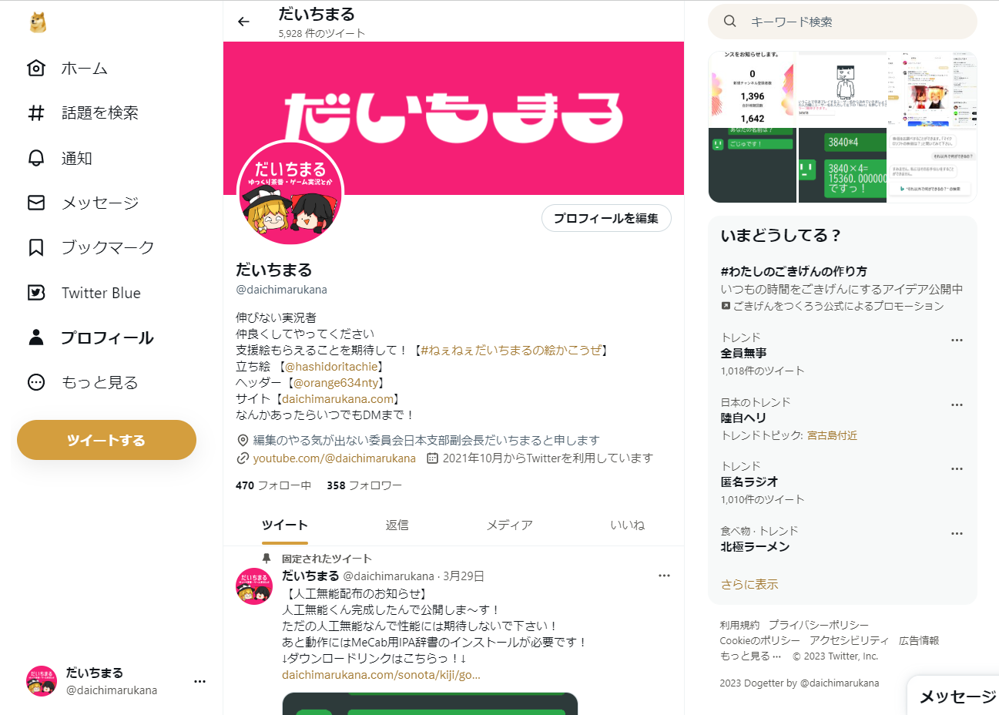

柴犬。
どじったーではなくどげったーです。
みなさんこう思ったと思います、
「Dogeの色とTwitterの青色が合わねぇ...」
ブラウザ拡張機能 Dogetterではその問題を解決します。
犬化します
「は？」
と思ったかもしれませんがご安心下さい。
TwitterをDoge色にするだけです。
Hola,Konnna fu ni.

※情報保護のためサイト内要素を一部消しています。
今見ていただいた上の画像のように、
Twitterが柴犬色に変身します。
以上
Install
Step.1 - Download
このサイトの一番下の「Download」からダウンロードして下さい。
Step.2 - {.zip}Decompression
いつもお使いの方法でダウンロードしたzipを解凍して下さい。
Step.3 - Install(Chrome)
Chromeを開き、右上のパズルマークから「拡張機能を管理」、ページ右上の「デベロッパーモード」をONにし、ページ左側の「パッケージされていない拡張機能を読み込む」、を押し、先程解凍したフォルダを選択
以上でインストール完了っ！Twitterを開いてみよう！
Step.3 - Install(Firefox)
Firefoxを開き、アドレスバーに「about:debugging#/runtime/this-firefox」と入力しアクセス、ページの中にある「一時的なアドオンを読み込む」を押し、先程解凍したフォルダ内の「manifest.json」を選択
以上でインストール完了っ！Twitterを開いてみよう！
Step.3 - Install(Edge)
Edgeを開き、右上のパズルマークから「拡張機能の管理」、ページ左側の「開発者モード」をONにし、「インストール済の拡張機能」の右側にある「展開して読み込み」、を押し、先程解凍したフォルダを選択
以上でインストール完了っ！Twitterを開いてみよう！
Notice
この拡張機能で起きた損害はだいちまるは一切保証しません！！！
この拡張機能は二次配布OKとします！！！勝手に改造して下さい！！！
Download
Dogetter
Ver 1.0.0
2023/04/06
©2022 - 2023 Daichimaru